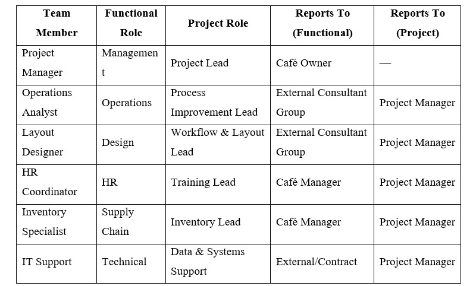
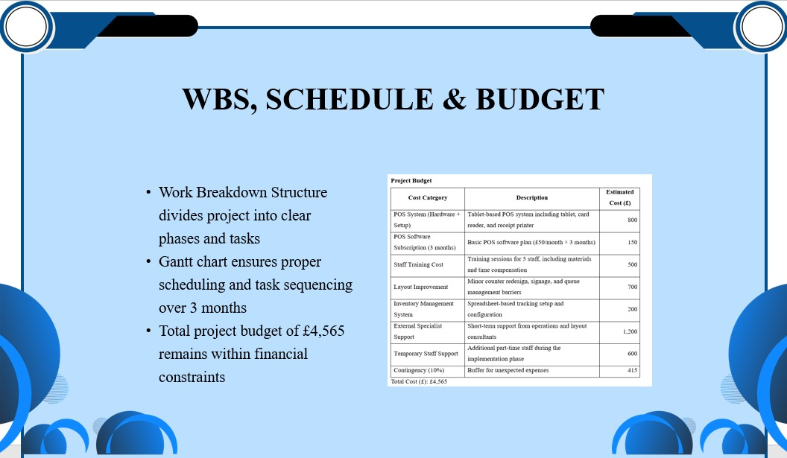
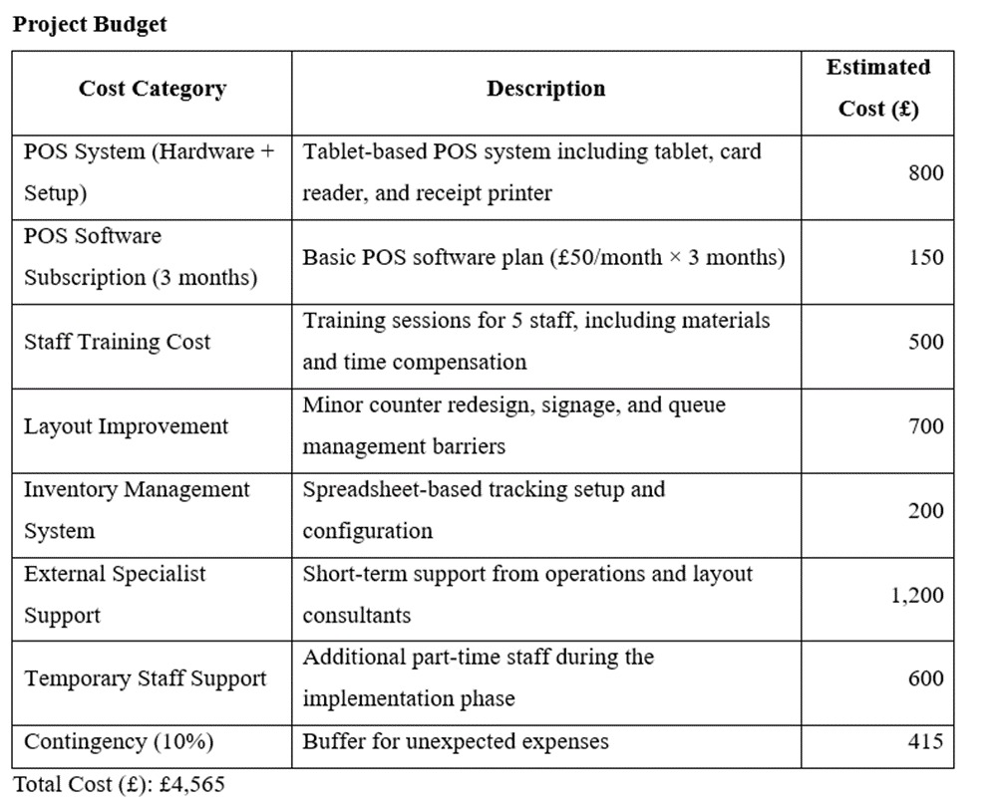
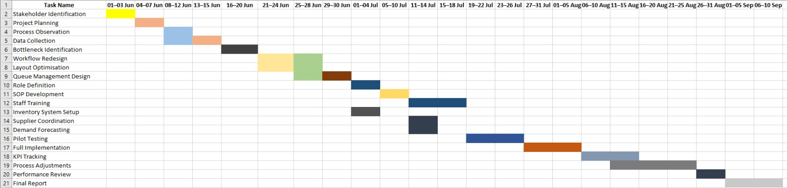
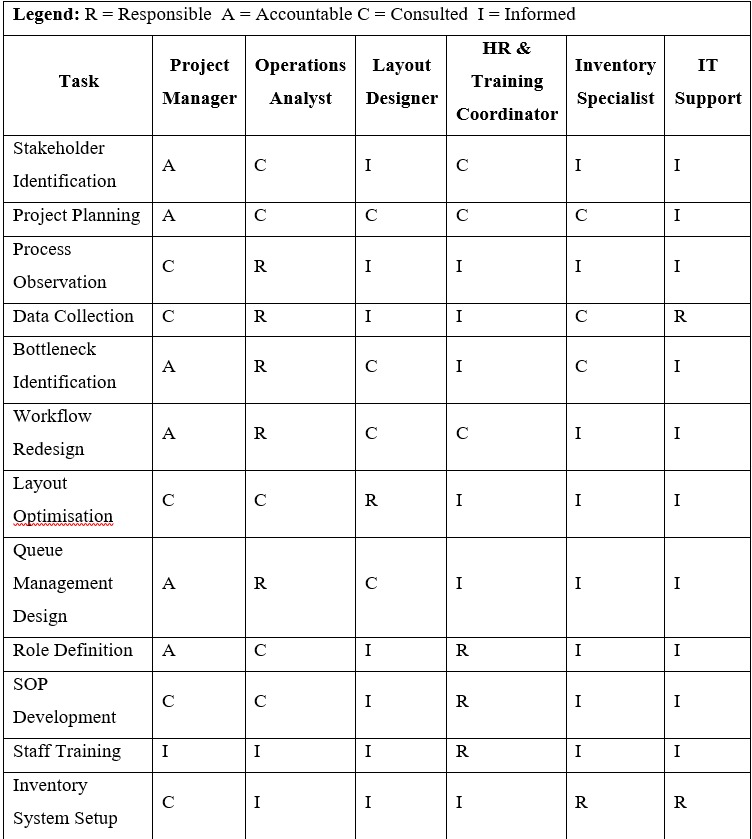

Operations and Project Management
Demonstrating employability skills developed through module activities
Identified operational inefficiencies and created solutions.
Analysed business data such as wait time and conversion rate.
Presented structured ideas clearly through presentations.
Worked through defined roles using RACI matrix.
Planned and executed tasks using Gantt scheduling.

Operational Analysis (Problem-Solving)

Presentation (Communication Skills)

Work Breakdown Structure

Gantt Chart (Time Management)

RACI Matrix (Teamwork)
These employability skills were developed through active engagement in module activities such as analysing business problems, creating structured solutions, and presenting findings. Tasks such as developing WBS, Gantt charts, and RACI matrices helped strengthen my planning and teamwork abilities. Continuous involvement in real-world case analysis enhanced my analytical and problem-solving skills while improving my ability to communicate effectively.
The employability skills that I have mastered during the course of this subject are the keys to my future professional success. My ability to solve problems is now one of my strongest assets. By conducting research on the operational issues of RainyDay Café, I was able to give viable solutions to these issues such as long wait time, poor workflow, and limited inventory. I gained a better understanding of how to methodically and effectively tackle real-world company challenges through this process. The study of operational statistics such as client flow, rates of transactions and delays in services also enabled me to develop my analytical thinking skills. Being aware of the influence of different aspects on the efficiency of companies allowed me to make informed judgements. Another aspect that enabled me to sharpen my skills in presentation and speech was the preparation and presentation of the project, as I was forced to express myself in a persuasive manner. Working in a team was another important ability that I honed. The project team structure and RACI matrix assisted me in understanding the importance of the definition of roles and collaborating to accomplish tasks. Time-management tools, including the Gantt chart, helped me to better plan my work, make realistic objectives and complete the tasks within the allotted time. Overall, this module has taught me a lot and helped me become a better professional, and I am in a much more advantageous position to apply what I have learned in the real world of business.